Vortex methods attempt to capture the inviscid and viscous, incompressible vorticity equations
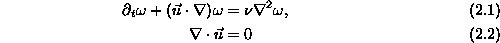
where is the viscosity. Though many have applied vortex methods to three-dimensional flows, this paper is restricted to two-dimensional flows. Vortex methods approximate the vorticity field as a linear combination of moving basis functions:
Each basis functions,
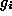
, has a position,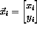
, and circulation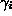
, but may also have other parameters. For instance, core spreading methods have widths that vary with time.The elliptical corrected core spreading vortex method (ECCSVM) is similar to the original corrected core spreading vortex method (CCSVM) except that it achieves fourth order spatial accuracy by using deforming elliptical Gaussian basis functions. In addition to advecting with the flow velocity calculated at the basis function centroid, deforming basis functions also rotate, elongate and spread based on local flow deviations and viscous diffusion. Thus, the exact vorticity field is approximated by
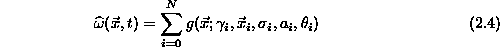
where
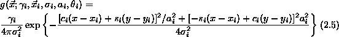
where  and
and  . The elliptical
Gaussian basis function is oriented at an angle with width
. The elliptical
Gaussian basis function is oriented at an angle with width
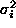
and aspect ratio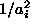
if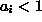
). Each of these parameters evolve under the action of the linearized vorticity equations
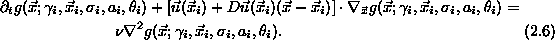
expanded by the vortex element position
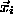
. After some simplification, the motion and deformation of each individual basis function is found to be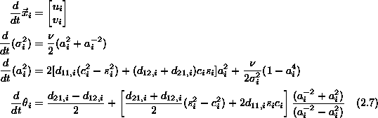
where
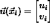
andLike other core spreading methods, this method is only accurate if one can make the blob widths
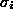
controllably small. Unfortunately, the individual dynamics of a single element do not permit such a restriction because the width of any element is bounded below by the fluid viscosity the flow velocity and velocity derivatives as seen in equation (2.7). This problem was originally solved with CCSVM by replacing elements whose widths have grown beyond a specified tolerance l with several thinner elements of width where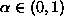
is a parameter that controls the frequency and accuracy of the refinement process. A similar but not identical process refines elliptical Gaussian elements for ECCSVM. For both CCSVM and ECCSVM, the refinement process becomes more accurate but also more frequent as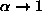
. Thus,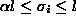
for all i and for all time. However, problem size can now grow large without bound. Since vortex methods require O(N),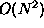
computations to calculate the velocity field for time integrations depending upon which summation algorithm one uses, it is crucial that one control the problem size, N, for large scale calculations.After undergoing many refinements, it is quite likely that many computational elements will nearly overlap one another. More specifically, one might expect to find a collection S such that
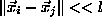
for i,j in S. In fact, one might expect to find many such collections throughout the domain. For CCSVM, one can almost neglect the fact that different elements in S have different widths because the widths are effectively controlled by l and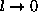
, it is impractical to force it there. From experience, many meaningful and accurate calculations are possible with aspect ratios of 2 or more. Thus, forcing l is to be so small as to bound the